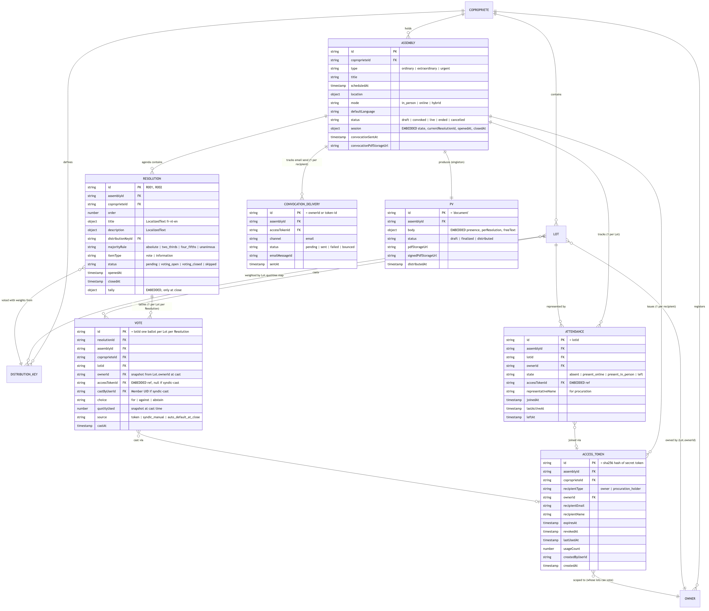
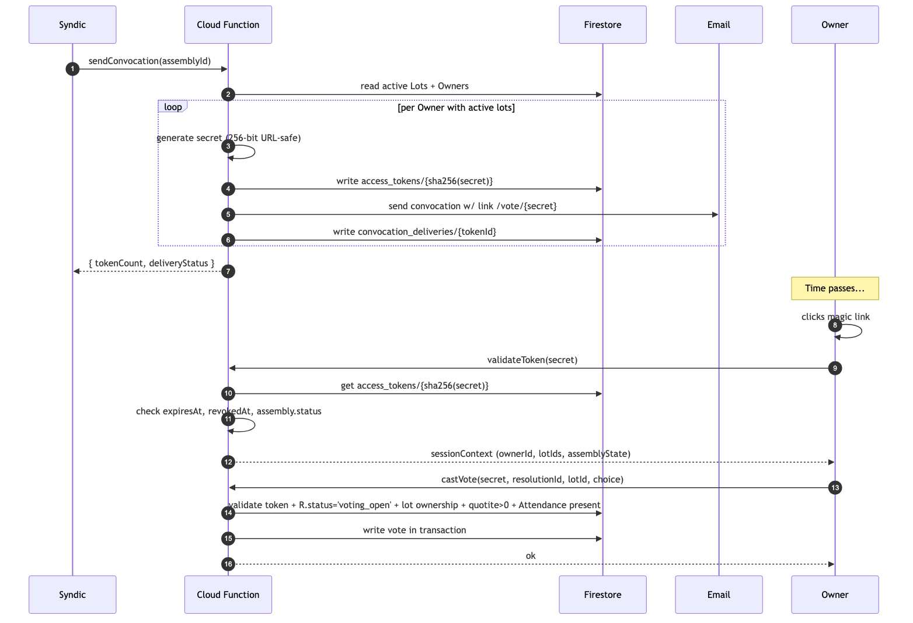
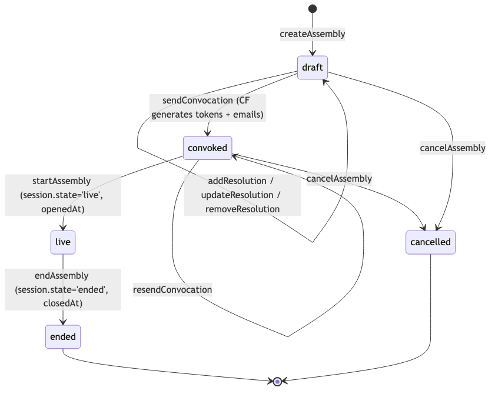
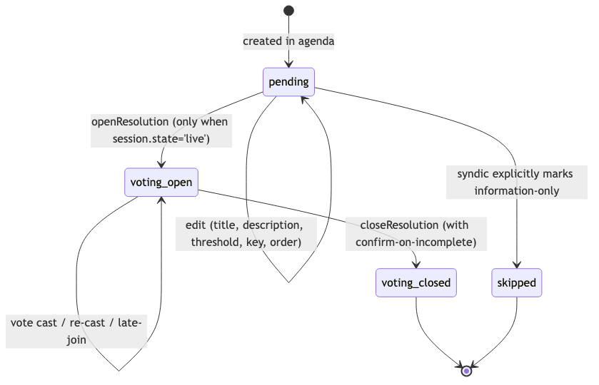
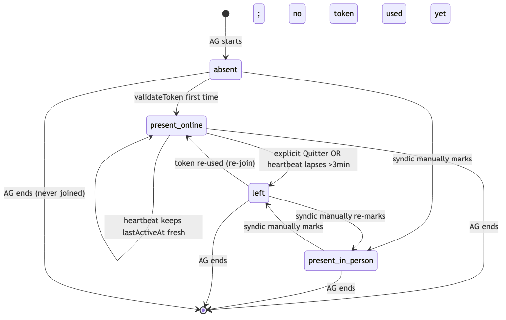
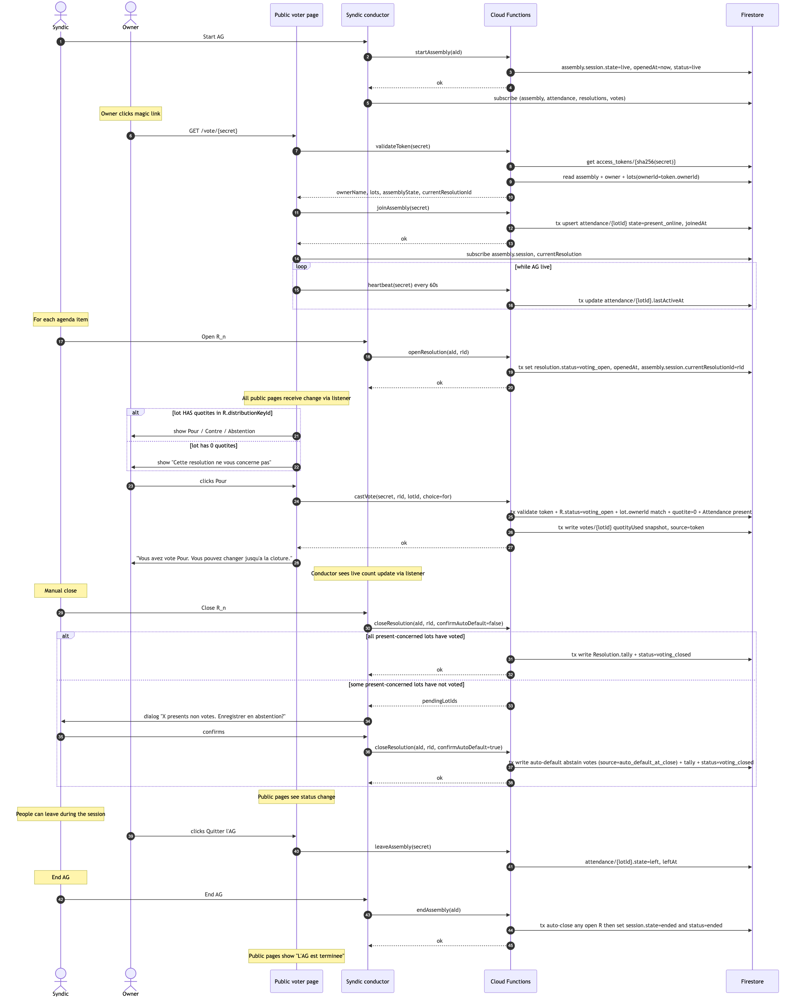
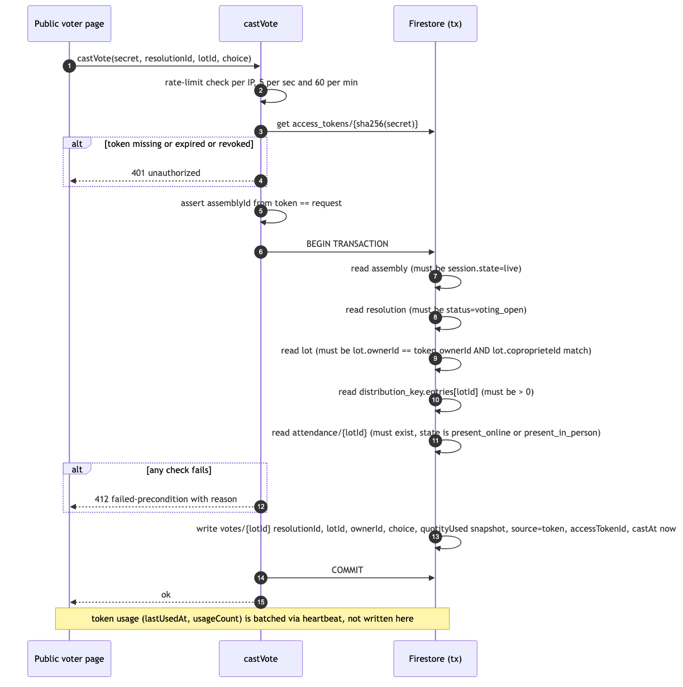
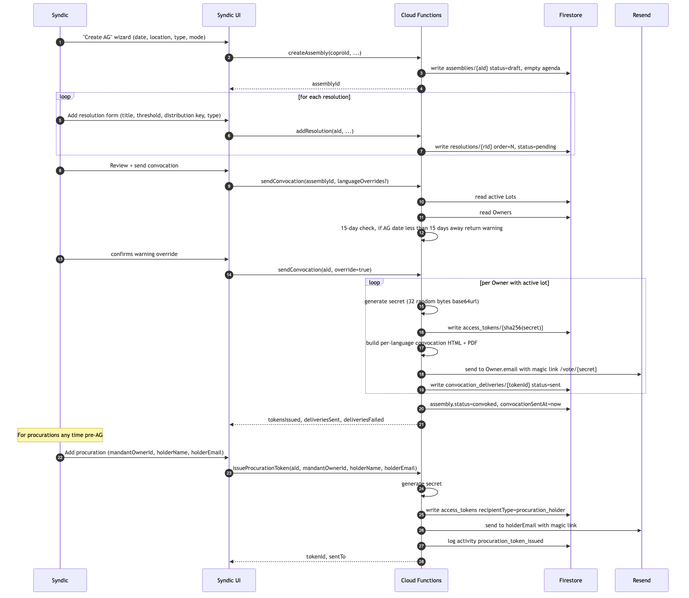
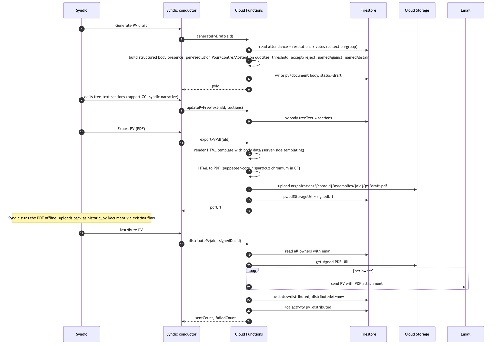

Le module AG, de bout en bout.
Rédiger une assemblée, envoyer les convocations, animer la session de vote en direct avec le syndic en chef d'orchestre, et produire le procès-verbal. Voici le plan d'implémentation — design et phasage figés, le code démarre à la validation.
Ce que fait V1.1, qui l'utilise, et pourquoi c'est important.
Syndicable V1.0 livre déjà l'ossature d'une copropriété : copropriétés, lots,
copropriétaires, lot-ownerships, clés de répartition, documents, journal d'activité, et le
modèle de représentants de la Phase 14. Le nettoyage G6 récent a rendu le lien Lot-vers-Copropriétaire
strictement 1:1 (Lot.ownerId, LotOwnership allégé). C'est sur ce
socle que V1.1 s'appuie.
V1.1, c'est le module Assemblée Générale. Le syndic rédige une AG, envoie les convocations par e-mail avec un magic link, anime la session en direct en chef d'orchestre (ouvrir une résolution, suivre le décompte en direct, la clôturer), et génère le PV à la fin. Rien d'autre. Pas d'appels de fonds, pas de bancaire, pas de décomptes, pas de signature du PV in-app.
Le fil rouge, c'est l'exemple IGS / Brugmann Ferme Rose : 166 copropriétaires, ~300 lots répartis sur trois clés de répartition (GEN, ASCENSEUR_9A, GARAGE), 18 résolutions à l'ordre du jour. Si V1.1 sait recréer le PV 2024 de Brugmann à partir d'une AG de test recréée, V1.1 est terminé.
Le substrat légal (Code civil belge, Livre 3, articles 3.84–3.100,
réforme post-2018) est vérifié. Les références doc ont été corrigées pour ne plus
renvoyer à l'ancienne numérotation 577-x. L'architecture est figée dans
app-architecture.md §3.3 ; cet article en est la feuille de route.
Ce qui sort en V1.1 — et ce qui ne sort pas.
L'entrée du journal des décisions du 2026-05-08 a figé ceci. Tout ce qui n'est pas dans la colonne IN est mis en pause. La colonne OUT est la liste de travail de « tout ce qu'on veut un jour mais qu'on ne construira pas maintenant ».
Inclus · livré en V1.1
- Création d'AG + saisie manuelle de l'ordre du jour
- Convocation par e-mail avec magic link PWA, ordre du jour manuel, consentement à la transmission électronique présumé
- Page de vote publique, basée sur token — pas de Firebase Auth requis
- Même mécanisme de magic link pour le copropriétaire en propre et pour le titulaire d'une procuration
- Présence du copropriétaire via la page publique (en ligne) ; le syndic marque les présences physiques manuellement
- Flux syndic-chef-d'orchestre en direct : démarrer l'AG → ouvrir Rn → décompte en direct → clôturer → terminer l'AG
- Bascule auto en abstention à la clôture pour les copropriétaires présents-mais-silencieux (DV3)
- UX « Cette résolution ne vous concerne pas » pour les lots à zéro quotité
- Arrivée tardive + sortie explicite pendant la session
- PV : auto-rédaction + édition libre + export PDF + envoi par e-mail + stockage en tant que
historic_pv - Obligations légales : avertissement préavis 15 jours, double quorum, vote en quotités, indivision = 1 bulletin, marqueur AG hybride, pour/contre nominatifs au PV
Hors · différé en phase 2 ou plus tard
- Extraction auto de la convocation depuis Word/PDF (différenciateur n°1 de Kevin)
- Canal convocation postal / recommandé — géré hors du système
- Surface de signature du PV in-app — le syndic signe le PDF hors-ligne et le ré-uploade
- Boîtiers de vote USB
- Flux automatique d'AG sur deuxième convocation — le syndic crée une nouvelle AG manuellement
- Points d'ordre du jour §3 soumis par les copropriétaires
- Pipeline d'upload des annexes — lien externe pour l'instant
- Automatisation du rappel de transmission du PV à 30 jours
- UI de la fenêtre de contestation 4 mois
Les décisions dont tout le reste découle.
Chacun de ces choix était une bifurcation. Chacun est désormais arrêté. La suite du plan part de l'hypothèse qu'ils sont actés.
Vote public basé sur token, pas Firebase Auth.
Les copropriétaires votent depuis une page publique du site, sans création de compte, sans mot de passe, sans OTP. Le token dans l'URL est l'identifiant. On a envisagé de réutiliser le flux d'invitation Phase 14 existant qui crée un doc Member avec rôle et scopes — mais ça laisse des artefacts d'adhésion persistants à nettoyer après l'AG, et ça oblige une copropriétaire de 75 ans, sur son téléphone, à passer par un OTP par e-mail à chaque fois.
La voie du token est plus légère et colle à l'UX réellement nécessaire. La Phase 14 reste responsable de la gestion des données copropriétaires entre les AG ; l'auth au moment du vote, c'est le token public. Les deux coexistent proprement.
Firestore uniquement — pas de Realtime Database pour V1.1.
Les écritures de vote demandent des transactions et de l'interrogation — c'est Firestore.
Décompte en direct via listener de collection sur votes — c'est Firestore.
Pointeur sur la résolution courante via listener sur Assembly.session.currentResolutionId
— c'est Firestore. Le seul endroit où la RTDB l'emporterait, c'est la présence avec
onDisconnect(), et on n'en a pas encore besoin.
À la place, un heartbeat de 60 secondes met à jour Attendance.lastActiveAt ;
une Cloud Function planifiée bascule les lots en left après 3 minutes
de silence. Pour une AG à 166 lots sur 2 heures, ça fait environ 20K écritures au total —
confortablement dans le free-tier. Si on a un jour besoin de la RTDB pour la
présence sur des AG à 1000+ lots, on l'ajoute plus tard sans toucher au modèle
de données.
Contrôle manuel de la session de bout en bout.
Le syndic, c'est le chef d'orchestre. Rien ne s'auto-ouvre, rien ne s'auto-clôture, rien
ne s'auto-transitionne. startAssembly est un bouton. openResolution
est un bouton. closeResolution est un bouton — avec un dialogue de confirmation
si un lot présent-et-concerné n'a pas voté, qui applique transactionnellement la règle
d'auto-bascule en abstention à la confirmation. endAssembly est un bouton qui
clôt d'abord automatiquement toute résolution encore ouverte.
C'est ainsi que les AG se déroulent réellement en salle : un président appelle chaque point, prend le vote, le déclare clôturé. On n'a pas besoin d'une machine à états qui remette en cause la main du syndic au volant.
Six nouvelles entités, un singleton.
V1.1 introduit sept nouvelles collections sous
organizations/{coproId}/assemblies/{aId}/ :
Assembly elle-même (avec le sous-objet session embarqué),
Resolution (avec tally embarqué à la clôture),
Vote (un par Lot par Resolution, ID déterministe),
Attendance (un par Lot, avec son état),
AccessToken (clé = SHA-256 du secret — le secret n'atterrit jamais en base),
ConvocationDelivery (suivi d'envoi e-mail par destinataire),
et le document singleton PV.
Rien dans V1.0 ne change de forme. Lot.ownerId,
Lot.quotities[distributionKeyId] et le registre Owner sont
lus par V1.1 mais jamais écrits. Pas de migration à prévoir : V1.1 est purement
additif.

Trois décisions de stockage méritent d'être nommées explicitement.
Un doc Vote par Lot par Resolution signifie pas de contention
(docs distincts par lot), une sémantique « le dernier cast écrase le précédent » gratuite,
et un ID déterministe. Le tally est embarqué sur Resolution et calculé
uniquement à la clôture — pas de hot-spot pendant le vote en direct.
Le quorum est calculé à la demande à partir d'Attendance + Lot.quotities ;
aucun compteur à maintenir.
Magic links publics, hashés au repos.
Quand le syndic clique sur « Envoyer la convocation », une Cloud Function lit chaque
Lot actif, parcourt l'ensemble des Owner uniques et, pour chaque Owner, génère un secret
frais — 32 octets d'aléa cryptographique, encodés en base64url. Ce secret part à un seul
endroit : le lien dans l'e-mail. Ce qui atterrit dans Firestore, c'est le hash
SHA-256 du secret comme clé du document. Le secret lui-même n'apparaît
jamais dans notre base.
Quand le destinataire clique sur le lien, la validation re-hash le paramètre d'URL et va chercher le doc. Une fuite de la base ne fuite aucun token actif — retrouver une pré-image en 256 bits est infaisable.

Sécurité du token en un coup d'œil
- Aléa URL-safe sur 256 bits, généré côté serveur avec
crypto.randomBytes(32).toString('base64url'). - Hashé en SHA-256 avant stockage. Le lookup, c'est
db.doc(`.../${sha256(secret)}`).get(). - HTTPS uniquement pour la route publique.
- Validation rate-limited — 5/sec, 60/min par IP — défense en profondeur par-dessus la taille de l'espace de recherche.
- Limité à une seule Assembly via
assemblyId; impossible de voter sur une autre AG même en cas de fuite du token. - Lié au Owner côté serveur ; le client ne peut pas dire au serveur « je veux voter pour un autre lot » — le serveur résout owner→lots tout seul.
- Révocable par le syndic via
revokeAccessToken; les appels suivants échouent. - Expire automatiquement 24 heures après
Assembly.scheduledAt.
La même forme de token couvre la procuration : le syndic émet un token avec
recipientType = 'procuration_holder', l'ownerId du copropriétaire
absent, et le nom et l'e-mail du mandataire. Le mandataire vote au nom des lots du
copropriétaire absent ; le PV enregistre le nom du mandataire dans les tableaux
namedAgainst / namedAbstain.
Trois petites machines à états finies.
Trois choses ont un cycle de vie : l'Assembly elle-même, chaque Resolution à l'ordre du jour, et l'Attendance par Lot. Aucune n'est large. Aucune ne s'auto-avance.

live.

absent ne sont jamais comptés ; une fois rejoint, on figure au registre.
La règle intéressante porte sur l'Attendance. Les lots absent ne sont
jamais comptés dans aucun tally — c'est le tas des « pas venus » de l'AG.
Les lots present_* et left sont tous deux comptés comme
« présents à un moment » pour l'auto-bascule en abstention. Une fois rejoint,
on ne peut pas se soustraire au registre pour/contre/abstention en fermant son navigateur.
C'est la lecture légale conservatrice et ça correspond au comportement d'une AG en
présentiel : si on arrive et qu'on s'éclipse en silence, on figure comme ayant été là.
Animer une AG, pas à pas.
C'est le cœur de V1.1. Le syndic ouvre la vue chef d'orchestre ; les copropriétaires cliquent sur leur magic link et rejoignent depuis leur téléphone. Le chef d'orchestre voit une jauge de quorum en direct, la timeline de l'ordre du jour, un panneau de présence, et — une fois une résolution ouverte — le décompte en direct avec la liste des lots présents-et-concernés qui n'ont pas encore voté.

Trois moments méritent un coup d'œil plus rapproché :
-
Rejoindre. Quand un copropriétaire arrive pour la première fois sur la
page publique, le serveur fait un upsert d'une ligne Attendance par lot qu'il possède
avec
state = 'present_online'dans une seule transaction. À partir de là, un heartbeat tourne toutes les 60 secondes. -
Ouvrir Rn. Le chef d'orchestre bascule la résolution en
voting_openet met à jourAssembly.session.currentResolutionId. Toutes les pages publiques reçoivent le changement via listener Firestore. Les lots à zéro quotité dans la clé de répartition de la résolution voient « Cette résolution ne vous concerne pas » ; tous les autres voient Pour / Contre / Abstention. - Clôturer Rn. Le chef d'orchestre clique sur Clôturer. Si quelqu'un de présent-et-concerné n'a pas voté, le serveur renvoie la liste et l'UI affiche un dialogue : « X présents n'ont pas voté. Enregistrer en abstention ? » À la confirmation, le serveur écrit les docs Vote d'auto-bascule et le tally et bascule le statut — le tout dans une seule transaction.
La transaction qui doit être juste.
Toutes les autres surfaces peuvent être ré-rendues, retentées, ou rattrapées. L'écriture
du vote, non. castVote, c'est la fonction qu'on ne regrettera pas d'avoir
écrite avec paranoïa.

À l'intérieur de la transaction :
- Le token doit exister, ne doit pas être expiré, ne doit pas être révoqué.
- L'
assemblyIdde la requête doit correspondre au token. - L'Assembly doit être en
session.state = 'live'. - La Resolution doit être en
status = 'voting_open'. - Le Lot doit appartenir à l'Owner du token et à la même copropriété.
- Le Lot doit avoir
quotities[R.distributionKeyId] > 0. - La ligne Attendance doit exister et être dans un état
present_*.
Si quoi que ce soit échoue, l'appel renvoie failed-precondition. Si tout
passe, le serveur écrit votes/{lotId} avec
quotityUsed figé au moment du cast, incrémente l'usageCount
du token, et commit.
La sémantique de re-cast tombe gratuitement. L'ID du doc, c'est le
lotId ; un deuxième cast écrase le premier. Last write wins.
Le journal d'activité enregistre chaque cast — y compris les écrasements — donc la trace
d'audit survit même quand le vote en direct ne survit pas.
Que se passe-t-il si le syndic clique sur Clôturer pendant qu'un vote est en vol ?
La transaction sérialise. Soit le vote atterrit avant la clôture (et est compté), soit
la clôture atterrit en premier et le vote est rejeté avec
failed-precondition. Pas de troisième issue.
Convocation à l'entrée, procès-verbal à la sortie.
La session en direct, c'est le milieu bruyant. Les deux extrémités font autant de travail, plus discrètement. La convocation émet les tokens qui authentifient la session ; le PV fige la trace légale après.
Avant-AG : rédaction et convocation
Le syndic crée l'AG (date, lieu, type, mode), ajoute les résolutions une par une, puis
clique sur « Envoyer la convocation ». La CF lit les lots actifs et les copropriétaires
uniques, applique le contrôle des 15 jours (avertissement-puis-passer-outre, pas un blocage
dur, conformément au §3 de la loi), génère un secret par copropriétaire, écrit le doc
access-token avec le hash en clé, construit la convocation HTML et PDF par langue, envoie
l'e-mail via Resend, et enregistre la livraison. Les procurations peuvent
être émises à n'importe quel moment avant l'AG par le même type d'appel —
recipientType = 'procuration_holder' avec l'identifiant du copropriétaire absent
et l'e-mail du mandataire.

Après-AG : rédaction du PV et distribution
Quand l'AG se termine, le chef d'orchestre fait apparaître un bouton « Générer le brouillon
de PV ». La CF parcourt l'attendance, les résolutions et les votes (collection-group), et
écrit un corps PV structuré : liste de présence, par résolution {Pour, Contre,
Abstention en quotités, seuil, accept/reject, contre nominatifs, abstentions nominatives}.
Le syndic édite les sections en texte libre (rapport CC, narratif), exporte en PDF, et
distribue par e-mail — le PDF atterrit en stockage en tant que Document
historic_pv. La signature du PV se fait hors-ligne ; le PDF signé est ré-uploadé
via le flux documentaire existant.

Le corps du PV fige tous les tallies et les votes nominatifs au moment de la clôture. Même si la donnée Firestore est éditée plus tard, le PV reste la trace légale. Cette décision de snapshot, c'est ce qui nous permet de garder le modèle de données en direct épuré.
Cinq phases, chacune livrable.
Chaque phase fait grosso modo une à deux semaines de travail concentré et se termine sur quelque chose qu'un vrai syndic pourrait utiliser sans le reste. On ne livre pas V1.1 en ratifiant le plan ; on le livre en clôturant chaque phase contre la recréation de Brugmann.
Schéma + rédaction d'AG
Types et Cloud Functions pour create / update / cancel / CRUD de l'ordre du jour. Liste des AG en frontend et éditeur d'avant-AG. Vérification : les 18 résolutions Brugmann saisies, éditées, annulées.
Convocation + magic links
sendConvocation, tokens de procuration, révocation, templates d'e-mail, génération de PDF, squelette de la route publique, validateToken. Vérification : 166 e-mails partent, les magic links arrivent au nom de la bonne personne.
Session en direct
Démarrer / terminer, rejoindre / quitter / heartbeat, ouvrir / clôturer / passer une résolution, castVote, basculer en présentiel, nettoyage des attendances obsolètes. UI en direct du chef d'orchestre et de la page publique. Vérification : bout-en-bout avec 5 copropriétaires de test et auto-bascule à la clôture.
Polish quorum + tally
Helper de quorum côté serveur, helpers de query symétriques, snapshot du tally avec exceptions nominatives. Jauge de double quorum en direct dans la vue chef d'orchestre. Vérification : reproduire les chiffres par résolution de Brugmann.
Brouillon de PV + distribution
generatePvDraft, édition libre, exportPvPdf, distributePv, template d'e-mail. Mode après-AG du chef d'orchestre. Vérification : le PDF du PV correspond à l'échantillon IGS dans une tolérance raisonnable.
Une fois la Phase E livrée, V1.1 est terminé.
Dix points à trancher au fil des phases.
Aucun ne bloque la Phase A. Ils sont signalés pour qu'on en tranche un à chaque phase qui les rencontre. La colonne recommandation est ma meilleure lecture actuelle ; la décision finale revient à l'utilisateur.
| # | Question | Recommandation |
|---|---|---|
| 01 | Rôle des lots left dans l'auto-bascule en abstention à la clôture. |
Les traiter comme présents (auto-abstention) — lecture légale conservatrice, conforme à IGS. |
| 02 | Pipeline de génération PDF — Puppeteer + Chromium vs pdfkit vs service externe. |
Puppeteer en CF — HTML/CSS complet, même approche que pour le PV. Pré-chauffage pendant l'AG. |
| 03 | Intervalle du heartbeat et seuil d'obsolescence. | Heartbeat 60s / seuil 3min. Si problème de coût sur des AG à 360 lots, ajouter la présence RTDB plus tard. |
| 04 | Collision sur le pointeur de résolution-courante quand deux navigateurs syndic se tirent la bourre. | Concurrence optimiste via précondition ifMatch sur session.currentResolutionId. |
| 05 | Sémantique de re-cast — un copropriétaire peut-il changer son vote jusqu'à la clôture ? | Oui — last write wins, chaque cast journalisé. À confirmer avec l'utilisateur. |
| 06 | Procuration + vote pour ses propres lots — un mandataire qui est aussi copropriétaire. | Deux magic links distincts — trace d'audit plus claire, résolution plus simple. |
| 07 | Choix de la langue de convocation — PDF localisé par copropriétaire ou PDF unique ? | PDF localisé par copropriétaire. Le compromis est acceptable ; la qualité de l'artefact légal compte. |
| 08 | Présents en physique sur AG hybride — leur faut-il aussi un magic link pour voter ? | Oui, même page publique sur leur propre téléphone. La bascule du syndic enregistre le fait « présent en physique » pour le PV. |
| 09 | Journal d'audit pour les changements de vote — entrée activity_log distincte par re-cast ? |
Oui — trace d'audit par vote ; le syndic peut filtrer après l'AG. |
| 10 | Resolution.itemType = 'information' — listée au PV ou suivie autrement ? |
À confirmer avec l'utilisateur. Le plan le gère via itemType: 'vote' | 'information'. |
Six contraintes belges, gravées dans le module.
Le Code civil belge (Livre 3, réforme post-2018) prescrit comment une AG de copropriétaires se convoque, se tient, se vote, et se consigne. Six règles sont en amont de chaque décision de design dans V1.1 — le modèle d'auth, le modèle de données, le flux de session en direct, et le PV. Elles ne sont pas une checklist de conformité ajoutée après coup ; elles ont façonné le système. Voici où chacune affleure dans le code.
| Contrainte | Ce que ça veut dire | Où ça affleure dans le système |
|---|---|---|
| Préavis de 15 jours Art. 3.87 §3 |
La convocation doit être envoyée ≥ 15 jours avant l'AG. Les 21 jours qu'utilisent certains immeubles relèvent d'une bonne pratique du règlement d'ordre intérieur, pas du Code. | sendConvocation vérifie assembly.scheduledAt - now ≥ 15 jours ; en deçà, renvoie un avertissement souple que le syndic peut passer outre (vraie urgence, ou risque assumé par les copropriétaires). |
| Double quorum à l'ouverture Art. 3.87 §5 |
L'AG ne délibère valablement que si à l'ouverture soit (a) >½ des copropriétaires sont présents/représentés et détiennent ≥½ des quotités, soit (b) les présents/représentés détiennent >¾ des quotités. À défaut : seconde AG ≥ 15 jours plus tard, sans condition de quorum (§6). | Calculé en direct pendant l'AG depuis Attendance + Lot.quotities[GEN]. La vue chef d'orchestre affiche la jauge. Aucune résolution ne peut être ouverte si le quorum n'est pas atteint. |
| Vote en quotités Art. 3.87 §2 |
Les votes sont pondérés par les quotités du lot (sa part de l'immeuble, sommée à 10 000). Jamais en têtes. Un Pour d'un lot à 500 quotités pèse 500 dans le décompte. | Vote.quotityUsed fige la quotité du lot dans la clé de répartition de la résolution au moment du cast. Les tallies somment ces quotités, ne comptent jamais les bulletins. |
| Indivision = 1 bulletin par lot Art. 3.87 §1 |
Un lot détenu en indivision (couple, fratrie en succession) est une seule entité votante — un bulletin, pas un par personne. Ils doivent désigner un seul mandataire. | Déjà acté par la décision D14 (un seul Owner par entité de propriété). Garanti par Lot.ownerId en 1:1. |
| Marqueur AG hybride dans la convocation Art. 3.87 §1 |
Si l'AG est hybride (certains présents en salle, d'autres en ligne), cela doit être annoncé dans la convocation. Pas d'improvisation au démarrage de la séance. | Assembly.mode = 'hybrid' est posé à la création de l'AG ; la génération du PDF de convocation lit ce champ et insère le langage légal sur la participation à distance. Un changement de mode après convocation impose un renvoi. |
| « Contre » et « abstention » nominatifs au PV Art. 3.87 §10 |
Le PV doit lister les noms des copropriétaires qui ont voté contre et de ceux qui se sont abstenus — pas seulement les totaux. Le PV de Brugmann fait littéralement ça. | Resolution.tally.namedAgainst[] et namedAbstain[] sont snapshotés à la clôture du vote (depuis Vote.castByOwnerId → Owner.displayName). Rendus dans le brouillon de PV. |
« Tally » / « Décompte ». Le tally embarqué sur Resolution.tally
est écrit une fois, à la clôture (per V1.0 spec D4 — jamais en direct
pendant le vote), avec les totaux, le contrôle de seuil, et les tableaux nominatifs figés
pour le PV. La barre de progression que voit le chef d'orchestre pendant le vote ouvert
est calculée côté client en sommant la sous-collection votes/{lotId}
— les listeners Firestore poussent des mises à jour sub-secondes sans jamais toucher au
doc Resolution. C'est ce qui nous évite un hot-spot sur le doc Resolution pendant les
30 secondes où 100 votants cliquent Pour en même temps.
Ce qu'est ce plan — et ce qu'il n'est pas.
C'est la feuille de route d'implémentation. Ce n'est pas un patch de code — aucun fichier
n'est modifié par sa validation. Ce n'est pas la spec durable — celle-ci vit dans
app-architecture.md §2.7 / §2.8 et dans le journal des décisions. Ce n'est
pas un engagement de livraison à N semaines — le phasage suppose un seul implémenteur
concentré.
Ce qui est couvert : rédaction d'AG, convocation, vote en direct, brouillon et distribution du PV. Ce qui n'est explicitement pas couvert : appels de fonds, décomptes, bancaire, boîtiers de vote USB, signature du PV in-app, extraction automatique de la convocation. Tout cela vit dans la liste différée selon le périmètre figé.